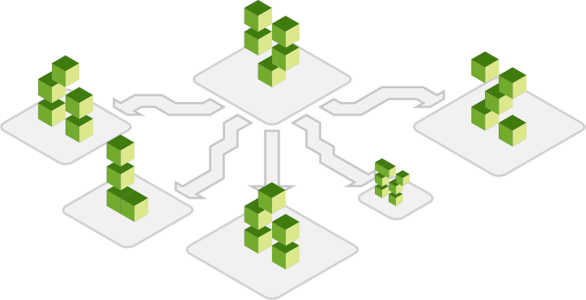
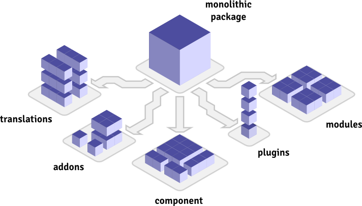
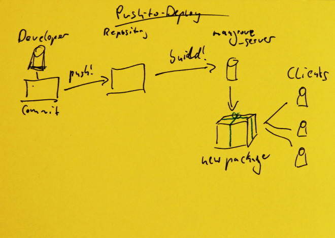

So - what's a package manager?
A package manager helps you install software without having to touch any files yourself.
If you have ever used a Linux Distribution, you will be familiar with one of their package managers like apt or yum and might have also used one of the various UIs that sit on top of them. For Mac OS, homebrew does about the same thing.
You might have used one without noticing too, though.
For instance - app stores are a popular way to manage packages (those packages simply happen to mostly be entire applications) or you might have used one to update existing software on your computer with an automatic updater (in turn being a package manager for a single application).
How is mangrove different?
it's decentralized
Both software and site developers can roll their own server.
Clients connect to the sources they need and trust.
That way, there is no central point of failure and the sources you connect to are, ideally, close to you.
By being decentralized, it makes the most efficient use of the resources and balances the load across nodes. The structure of the system in itself is thus like a CDN.
it's a network
Individual servers can be connected to each other.
Clients connect to servers from site developers or community projects which they trust... which in turn forward only the software from developers they trust.
Through this, the network becomes a natural web of trust.
After all, this is the internet, let's use it the way it was meant to be used.
it's portable
The client and server alike can run standalone or in your CMS.
The entire software stack was built on only a handful of dependencies, it works well across PHP versions and is not bound to a particular framework.
The client can even chug along on a PHP5.2 install, if that's what you're into.
it's fast
From the package building to the deployment to even the UI itself, mangrove is built for speed and efficiency.
Throughout the entire deployment chain, it further uses an efficient publisher/subscriber structure and communicates through a slim, RESTful API.
To keep traffic down further, mangrove only distributes the software that the client needs in small, incremental packages.
it's built for applications
Most package management or deployment software works great for libraries but is very uncomfortable for applications.
For instance: you may want to deploy individual features as separate plugins, but that would mean making separate repositories or structuring your main repository awkwardly.
In mangrove, applications and their extensions are the first class citizens, not packages.
it's built for business
While mangrove embraces FOSS principles, it is built by and for seasoned commercial software vendors and users.
Every facet of the system is embedded in a flexible and effective access restriction system that lets you monetize your channels in a way that fits your business.
it's built for freedom
Trust is all about having the freedom to go somewhere else... yet still sticking around.
With a flexible system like mangrove, participants of the network excel in their roles because they can be held accountable and can be exchanged.
Instead of a dependency, it's about mutual responsibility.
Who are you?
What's in it for... Regular Users?
You don't need every part of everything.
To keep you from installing dozens of individual packages, applications are zipped up into huge containers that simply include everything. So you download and upload a lot more software than you end up using. And then you need to update it.
Including one-click
(and automatic)
installs and updates.
No more waiting for the next "big" release, get plugins and features ahead of major releases.
mangrove makes using bleeding edge builds both safer and more convenient
A user finds a bug and reports it to the support team. They file a bug report and a new branch of the source code is set up. After a fix has been found, the user installs only the fixed branch, not a completely new package.
Sometimes, you need to use bleeding edge software. If everything goes right, that gets you all the fixes you need. Unfortunately, however, you may also get some new bugs you didn't want.
With mangrove, software developers can split off fixes into separate branches so you only get the version you need, not all the changes that you're not ready for, yet (for instance when receiving support on a bug).
What's in it for... Site Developers?
Deploy software to your clients
at hyperspeed
We're giving you the power over your own clients instead of imposing ourselves.
Manage your sources
your way
Including your own (which might be transparent relays to other servers).
Pick and choose
updates
Clients trust you with their site, so you should be in charge of making sure they're happy.
Automatic Updates
at your pace
Getting fast updates is nice, but sometimes, you want them every Saturday at midnight.
What's in it for... Software Developers?
Where other solutions try to bind you to them as a service, mangrove is set up to be decentralized. However, since it has networking capabilities built in, developers can link up and form a distributed network.
Bla bla bla.
Also bla.
Automatically split up your application into packages that can be deployed separately.
Components, Plugins, Modules, Translations… Applications can get pretty difficult to manage with all the small parts you have to keep track of in your codebase. Suddenly, you find yourself trying to have your users install a multi-megabyte package that they only need 20% of.
With mangrove, splitting up your big application into separate packages that can be installed separately is as easy as writing a one line .json file.
(We even automatically generate those annoying .xml files for you, if you want.)
Direct integration, including branches and ticket information. (Integration with other services possible or planned.)
Bla bla bla.
Also bla.
Ready-to-go, Ready-to-sell: With joomla, AEC and mangrove, you're ready to have your business set up in no-time. Set up memberships for individual software packages and restrict the number of connected sites, if you want to.
When setting up AEC, an integration with the mangrove server can be set up. That automatically checks back with the server to find out which permissions could be set for users. When a user purchases a plan, the serer is queried and sets the correct permissions.
One push to your repository and a few moments later, a new package is available to your clients. (Or, with automatic updates, is already installed for your clients.)

A developer creates a new commit and pushes that to the repository. This in turn triggers a build on the mangrove server. This creates a new package which is served to clients.
Understands branches and uses semantic versioning automatically.
Wait a minute! How does it do automatic version numbers?
When a commit is applied to a repository, mangrove server checks which packages are affected and increments their version number according to the number of changes, individually. Branches carry their own version numbers and on a merge, these are joined up.
Incremental Builds
Only builds what you push.
Incremental Deployment
Clients only install what they need
Some other thing
Can't remember what, right now.
How can I get mangrove?
Regular
Users
Very simple! Just copy and paste this into your joomla installer:
http://www.serverdoesntexistyet.example/packages/valanx/mangrove-bootstrap
(Hey, if this catches on, this might be the last URL you need to copy in there!)
Site
Developers
For basic use, you just install mangrove like a regular user (see above). Of course, based on the volume of sites, this is subject to what restrictions are imposed by the sources you subscribe your sites to.
.
Software
Developers
If you want to set up your own mangrove server, you need a "Publisher" membership at valanx. When you have that, contact us directly and we will get you set up.
Roadmap
Here are some of the things that are planned for the near future of mangrove:
Further
speed improvements
Things like incremental updates per sub-package, deployment to GitHub Releases and other CDNS...
Built-in Deployment to
all popular CMSs
At the moment, Joomla is the first target of deployment that mangrove was built for. Wordpress will follow next. We'll see what comes after that.
Of course, this is as much about how you build your software as it is about the deployment itself, but there are a lot of developers (for instance: template devs) who already have separate build routines in place.
The goal of mangrove is to tie together your deployment channels.